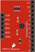
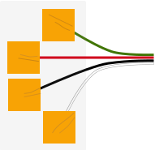

In this workshop, you will connect a capacitive touch sensor to an Arduino via the I2C interface. You will program the Arduino to send a message over the serial interface when you touch and release a pad.
Every object has capacitance, capacitance is just an objects ability to hold a charge, and when you come in contact with something you change its capacitance. The capacitive touch sensor looks for these changes, and tells us when it happens.
For this lab, you will connect a capacitive touch sensor to the Arduino. You will connect the sensors inputs to copper tape strips. When a copper tape strip is touched, the Arduino will report the touch. When you move your finger off the copper tape, the Arduino reports that you have untouched the tape.
To begin, grab the parts listed in the Parts section and assemble them as illustrated in the diagram in the Breadboard section.
Once your circuit is assembled, use the Arduino IDE to type in the code in the Program section and upload it to your Arduino. To do this, plug the Arduino board into your USB port. Then select the proper port in Tools > Serial Port > (the comm port of your Arduino).
Next upload the program by going to File > Upload to I/O Board (ctrl+U). Finally bask in the glory and possibility that controlling lights offers.
The following the parts for this lab.
Capacitive Touch Sensor |
Looks for changes in capacitance Twelve (12) input pins. Can be connected to anything! Talks to Arduino using the I2C interface pins. Requires +3.3v for power. Careful, don’t connect it to +5v, it will ruin the board! |
Touch Pad |
The touch pad provides input to the capacitive touch sensor. |
#include "mpr121.h"
#include <Wire.h>
int irqpin = 2; // Digital 2
boolean touchStates[12]; //to keep track of the previous touch states
void setup(){
pinMode(irqpin, INPUT);
digitalWrite(irqpin, HIGH); //enable pullup resistor
Serial.begin(9600);
Wire.begin();
mpr121_setup();
}
void loop(){
readTouchInputs();
}
void readTouchInputs(){
if(!checkInterrupt()){
//read the touch state from the MPR121
Wire.requestFrom(0x5A,2);
byte LSB = Wire.read();
byte MSB = Wire.read();
uint16_t touched = ((MSB << 8) | LSB); //16bits that make up the touch states
for (int i=0; i < 12; i++){ // Check what electrodes were pressed
if(touched & (1<<i)){
if(touchStates[i] == 0){
//pin i was just touched
Serial.print("pin ");
Serial.print(i);
Serial.println(" was just touched");
}else if(touchStates[i] == 1){
//pin i is still being touched
}
touchStates[i] = 1;
}else{
if(touchStates[i] == 1){
Serial.print("pin ");
Serial.print(i);
Serial.println(" is no longer being touched");
//pin i is no longer being touched
}
touchStates[i] = 0;
}
}
}
}
void mpr121_setup(void){
set_register(0x5A, ELE_CFG, 0x00);
// Section A - Controls filtering when data is > baseline.
set_register(0x5A, MHD_R, 0x01);
set_register(0x5A, NHD_R, 0x01);
set_register(0x5A, NCL_R, 0x00);
set_register(0x5A, FDL_R, 0x00);
// Section B - Controls filtering when data is < baseline.
set_register(0x5A, MHD_F, 0x01);
set_register(0x5A, NHD_F, 0x01);
set_register(0x5A, NCL_F, 0xFF);
set_register(0x5A, FDL_F, 0x02);
// Section C - Sets touch and release thresholds for each electrode
set_register(0x5A, ELE0_T, TOU_THRESH);
set_register(0x5A, ELE0_R, REL_THRESH);
set_register(0x5A, ELE1_T, TOU_THRESH);
set_register(0x5A, ELE1_R, REL_THRESH);
set_register(0x5A, ELE2_T, TOU_THRESH);
set_register(0x5A, ELE2_R, REL_THRESH);
set_register(0x5A, ELE3_T, TOU_THRESH);
set_register(0x5A, ELE3_R, REL_THRESH);
set_register(0x5A, ELE4_T, TOU_THRESH);
set_register(0x5A, ELE4_R, REL_THRESH);
set_register(0x5A, ELE5_T, TOU_THRESH);
set_register(0x5A, ELE5_R, REL_THRESH);
set_register(0x5A, ELE6_T, TOU_THRESH);
set_register(0x5A, ELE6_R, REL_THRESH);
set_register(0x5A, ELE7_T, TOU_THRESH);
set_register(0x5A, ELE7_R, REL_THRESH);
set_register(0x5A, ELE8_T, TOU_THRESH);
set_register(0x5A, ELE8_R, REL_THRESH);
set_register(0x5A, ELE9_T, TOU_THRESH);
set_register(0x5A, ELE9_R, REL_THRESH);
set_register(0x5A, ELE10_T, TOU_THRESH);
set_register(0x5A, ELE10_R, REL_THRESH);
set_register(0x5A, ELE11_T, TOU_THRESH);
set_register(0x5A, ELE11_R, REL_THRESH);
// Section D
// Set the Filter Configuration
// Set ESI2
set_register(0x5A, FIL_CFG, 0x04);
// Section E
// Electrode Configuration
// Set ELE_CFG to 0x00 to return to standby mode
set_register(0x5A, ELE_CFG, 0x0C); // Enables all 12 Electrodes
// Section F
// Enable Auto Config and auto Reconfig
/*set_register(0x5A, ATO_CFG0, 0x0B);
set_register(0x5A, ATO_CFGU, 0xC9); // USL = (Vdd-0.7)/vdd*256 = 0xC9 @3.3V
set_register(0x5A, ATO_CFGL, 0x82); // LSL = 0.65*USL = 0x82 @3.3V
set_register(0x5A, ATO_CFGT, 0xB5);*/ // Target = 0.9*USL = 0xB5 @3.3V
set_register(0x5A, ELE_CFG, 0x0C);
}
boolean checkInterrupt(void){
return digitalRead(irqpin);
}
void set_register(int address, unsigned char r, unsigned char v){
Wire.beginTransmission(address);
Wire.write(r);
Wire.write(v);
Wire.endTransmission();
}
Check the make sure the proper serial port is selected. You select the serial port using the menu items tools > serial port.
The touch sensor will not work if the I2C pins are not properly connected. Make sure that the SCL pin is connected to A5 and the SDA pin is connected to A4.
Add LEDs to your circuit, one for each touch pad. Program the Arduino to light an LED when its assoicated pad is touched. Make the LED go out when you release the pad.
At a speaker to your circuit and program it to play a note when a pad is touched. The Play Sound for details on how to hook up the speaker.